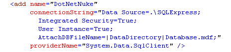
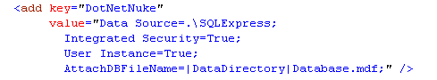

Congratulations! You have created your own DotNetNuke project. Please take a few minutes to read this document, as it will help you install and configure your new website.
In order to make your experience with DotNetNuke as productive as possible, we have optimized the number of installation steps required for web developers.
As long as you selected the default options for creating a web project in Visual Studio 2005 ( selected "File System" as the Location: for your website ) and want to use the default SQL Server 2005 Express database included with the application, you simpy need to press Ctrl-F5 (ie. hold the Ctrl key down while clicking on the F5 function key) in order to complete your installation. The application may take a few minutes to build and you may find it useful to monitor the build progress output ( select View / Output or CTRL-ALT-O within Visual Studio 2005 ). When your web browser loads the initial Installation screen, you must choose the Auto Installation option to successfully complete the process.
For those developers are not satisfied with the default options used in the Quick Installation option above or perhaps want a little more control over the installation process, we have included Advanced Installation instrustions to cover the most common customizations.
DotNetNuke is a dynamic web application; therefore, you must create/configure a Database. The default connection string provided assumes that you will be using a SQL Server 2005 Express database file called Database.mdf.
Data Source=.\SQLExpress;
Integrated Security=True;
User Instance=True;
AttachDBFilename=|DataDirectory|Database.mdf;
If you would like instructions on creating a SQL Server Express 2005 Database file with a different name then see SQL Server 2005 Express Configuration.
If you would like to use a standard SQL Server 2000 or SQL Server 2005 Database then you will need to create and configure one before proceeding. You will also need to decide on the credentials used to access the Database you created. You can use Integrated Security (credentials based on your Windows User Account), or you can use SQL Server's own security. Again, the default connection string assumes the latter. For more information, on setting up a SQL Server Database see SQL Server 2000 Configuration or SQL Server 2005 Configuration.
Once you have created your database you will need to hook up the connection string in web.config. There are TWO places in web.config where you need to verify the connection string. In the <connectionStrings> node:

and under the <appSettings> node

(Note that the connection string attributes includes line-breaks to make them more readable - the actual string must be on one line.)
The examples shown above are for the default SQL Server 2005 Express database file "Database.mdf". If you used a different filename for the database file, you need to change the AttachDBFilename=|DataDirectory|Database.mdf; section.
To use a SQL Server 2000 or 2005 database replace the whole connection string by something similar to
Server=(local);Database=DatabaseName;uid=LoginName;pwd=LoginPassword;
For the most part, you should not need to configure your web server. It does not matter whether you selected the File System (default) or HTTP (IIS) as the Location: for your web server. In either case the default configurations should work. In fact the File System web server has no configuration options. However, if you would like further information on configuring IIS please see Configuring Internet Information Server (IIS).
If you created your new project using the HTTP option (IIS) then you need to set the permissions for the System Account used by ASP.NET. This step is not neccessary if you used the File System (default) option to create your new site.
The NETWORK SERVICE account (Windows 2003) or the ASPNET account (Windows 2000) must be given Full Control on the Virtual Directory you are using. For more information see NTFS Permissions Configuration.
DotNetNuke installations use a template to determine what content gets loaded when the site is first created. There are 4 templates available
Under normal circumstances you do not need to do anything ( the site will install using the default template ), but if you would like to install based on one of the alternate templates, or would like more information on templates see Configuring the Install Template.
If you have completed the steps above, you are now ready to install your new
DotNetNuke site. To install the site press Ctrl-F5 (ie hold the Ctrl key down while clicking on the F5 function key). The application may take a few minutes to build if this
is your first installation. In order to view the build progress you should select
View / Output ( CTRL- ALT-O ) from Visual Studio 2005.
The information in this page is only an overview of the DotNetNuke?Web Application Framework. For more information, visit www.dotnetnuke.com.